Service Workers
Se trata de un tipo de web worker particular, en si este tipo de worker se emplea al trabajar con servidores, su función consiste en actuar de receptor de todas las peticiones que se destinen hacia el servidor, para luego procesarlas y posteriormente realizar la consulta al servidor, luego recibir la respuesta y enviarla al cliente que realizo la consulta en primer lugar.
En ese sentido realiza el papel de intermediario entre los navegadores y el servidor, debido a esto es muy común que el service worker este repleto de "addeventlistener" (escucha de eventos), para poder realizar una u otra acción según sea necesario.
interfaz ServiceWorker
Se trata del objeto "serviceWorker" el cual es un buena practica el comprobar si este se encuetra compatible en el navegador, ya que algunos navegadores no poseen soporte para estos, los navegadores que no admiten Service Workers son:
Internet Explorer (todas las versiones)
Opera Mini (todas las versiones)
Android Browser (todas las versiones anteriores a la 4.4.4)
Safari (todas las versiones anteriores a la 11.1 en escritorio y 11.3 en dispositivos móviles)
cualquiera sea el caso se puede comprobar si el navegador posee el objeto "serviceWorker" de la siguiente forma:
Ejemplo
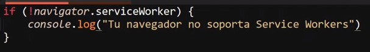
Una vez comprobada la compatibilidad con los service workers se procede a instalarlo, esto es de esta forma ya que los service workers son archivos que se ejecutan en el almacenamiento local del usuario, es decir el archivo es descargado e instalado en el equipo del usuario, lo que permite el realizar acciones o ejecutar codigo aún si la paguina o el navegador se encuentran cerrados.
Esto ya que estos no forman parte del hilo normal de la paguina, en su lugar estos se ejecutan en el background del equipo, la declaración del service weorker se realiza de la siguiente forma:
Ejemplo
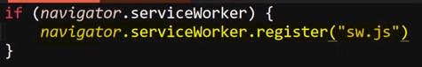
Se usa el metodo ".register" del objeto "serviceWorker", al cual se le define la dirección del correspondiente archivo
A la hora de trabajar con service worker se utiliza las herramientas de desarrollador, espesificamete la pestaña de "Application", en el apartado de "service workers" de la siguiente forma:
Ejemplo
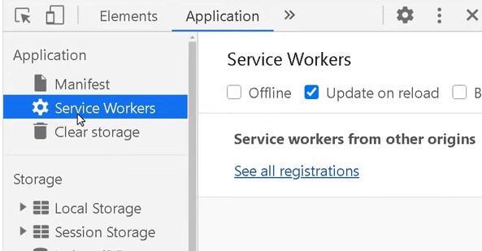
Llegado el momento de estructurar el codigo del service worker estos cuentan con una pequeña particularidad la cual es que la palabra clave "this" no es la unica alternativa a la hora de hacer referencia al documeto actual, en estos las palabra clave "self" cumple exactamete la misma función, por lo que es muy común que al trabajar dentro de los service worker se utilise "self" en lugar de "this".
Eventos y el Ciclo de vida
Install
Se dice que los service worker poseen un ciclo de vida ya que estos al crearse pasan por dos etapas, la primera de estas es la "instalación", se trata del primer evento que se acciona, esta ocurre al declararse el codigo de los ejemplos anteriores,la instalación sucede al detectase que no existe el service worker en el equipo, por otro lado debido a que estos perduran a lo largo del tiempo este evento solo se dispara una vez, al menos que el service worker sea eliminado del equipo, entoces volvera a ocurrir.
Para detectar si el service worker se instalo en el equipo se usa el evento "install":
Ejemplo
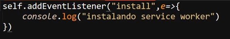
Activate
La segunda etapa del ciclo de vida del service worker es la "Activacón", en la cual se puede realizar acciones tomando como base el evento "activate" de la siguiente manera:
Ejemplo
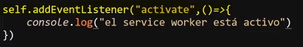
De este modo se utilizan los eventos "install" y "activate" para comprobar y o ejecutar codigo en base a las dos etapas del ciclo de vida, sin embargo existe otros eventos más, que son necesarios a la hora de trabajar con los service worker.
Error
Un evento muy importante para los service worker es "error", el cual como se puede preveer se utiliza para trabajar con cualquier error que pudiese originarse durante la ejecución.
Ejemplo
Nota: Para esto tambien se se suele utilizar el metodo ".catch"
Fetch
Este ultimo evento se utiliza para verificar si se esta realizando una solicitud a este service worker, en otras palabras cada vez que el navegador realise una y esta sea interceptada por el service worker se ejecutara el codigo vinculado a este evneto.
Ejemplo
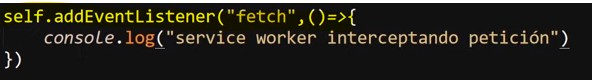
PostMessage( )
Este metodo funciona exactamete igual que en los "dedicated worker", es decir este metodo permite realizar el envio de datos entre el "wer worker" y un elemento externo, ya sea este el servidor o el navegador.
Sin embargo la ejecución de este si se debe de realizar de una forma un poco diferente, esto ya que los service workers tienen la particularidad de demorar un poco en su ejecución, para esto existe el metodo "ready" el cual permite esperar y comprobar si el service worker ya a sido cargado antes de ejecutar una acción.
El metodo "ready" retorna una promesa, por lo tanto se obtiene un objeto "serviceWorkerRegistration" el cual contiene el service weorker en el interior del metodo ".active"
Ejemplo
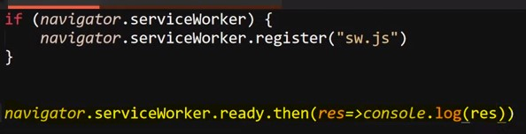
Resultado
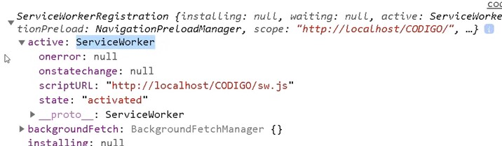
Nota: el codigo de este ejemplo no se ejecuta en el service worker, si no en el documento principal, ya que es alli donde se esta originando el envio de datos.
De este modo accediendo al metodo ".active" se puede obtener el service worker, lo que a si vez permite utilizar el metodo "PostMessage( )" para eviar la información al service worker.
Codigo del Documento Principal
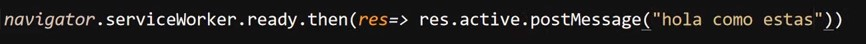
Codigo del Service Worker
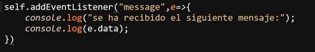
Resultado
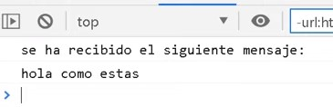
Por otro lado si se desea implementar una respuesta o definir un dato que sea enviado desde el service worker se realiza un uso comun de "PostMessage".
Codigo del Documento Principal
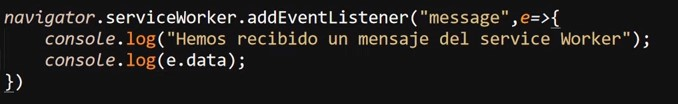
Codigo del Service Worker
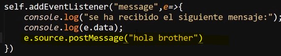
Resultado
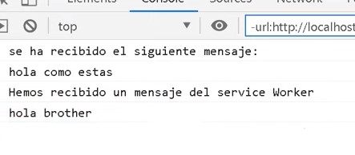
Registrar el cache y mostrar el sitio web offline
Una aplicación bastante realista sobre los service worker es el almacenarlos en la cache del equipo, para esto se emplean los elementos correspondientes para esto, tal como se espesifica en el apartado de lamanipulación de la cache
Apertura de la Cache
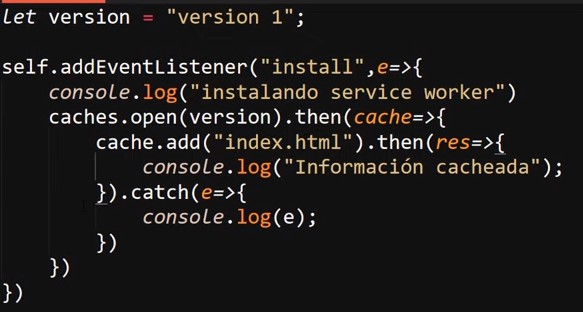
En este ejemplo se utiliza el evento "install" para detectar el mometo en el que se instale el service worker en el equipo, al ocurrir esto se imprime un mensaje en consola, luego se habre la cache, se define el nombre del objeto y el archivo (Index.html) que este almacena, se imprime otro mensaje en consola y por ultimo se define el manejo de errores con ".catch"
Resultado
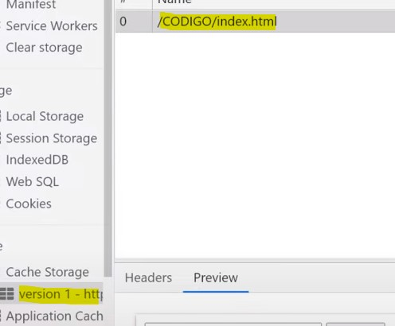
El cache se puede considerar un recurso limitado, ya que no es lo ideal disponer mucho de este, se recomienda eliminar cualquier elemento inecesario, para esto se suele utilizar el evento "activate" de la siguiente forma:
Eliminar Cache Obsoleto
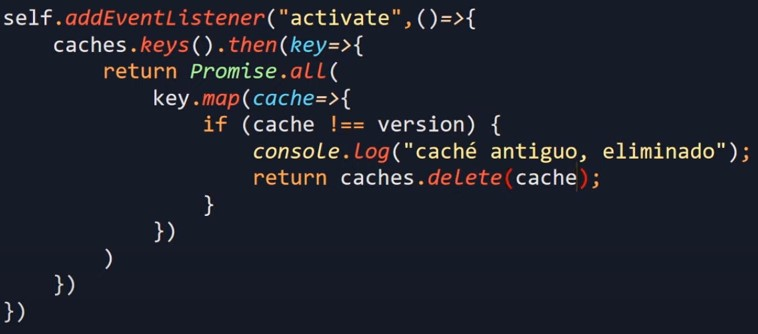
En este ejemplo se utiliza el evento "activate" para eliminar cualquier vestijio de elementos anteriores, esto se realiza accediendo a todas las keys de la cache mediante la respectiva promesa que es retornada, y utilizando el metododo "key.map", el cual se trata de un metodo para mapear los array, accediendo de ese modo a las keys y eliminado cualquier elemento diferente a la versión actual del objeto.
Por ultimo para mostrar la paguina offline se utiliza el evento "fetch", en el cual se aplica el metodo ".respondWith( )", el cual se responde con una promesa, en la cual en el siguiente caso se realiza una función la cual realiza la consulta, por ultimo se hace aplica un condicional para determinar si se retorna los datos guardados en la cahce o si en su lugar se retorna la consulta por intenet.
Mostrar Offline
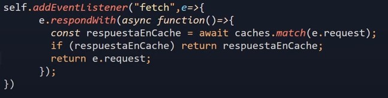
Extra
Para profundizar más sobre el ciclo de vide de los service workers se puede ingresar a el siguiente Block
Nota: La sección "service worker" de la pestaña "aplicatión" de la "herramienta de desarrollador" puede que necesite ser actualizada de forma manual para representar los cambios efectuados al proyecto, para esto se presiona el vinculo "Update" de la siguiente forma:
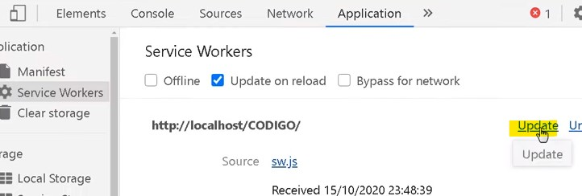